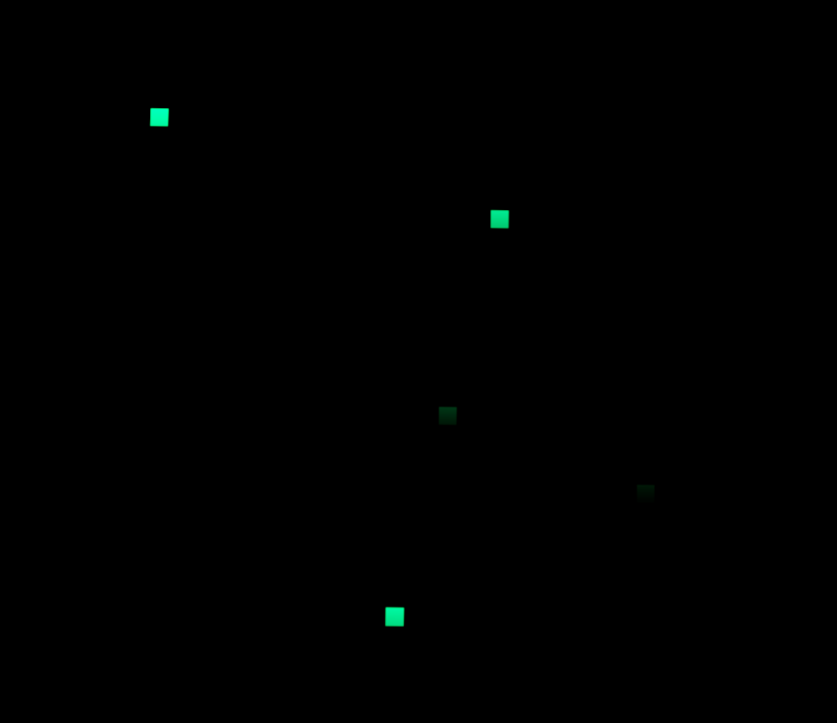
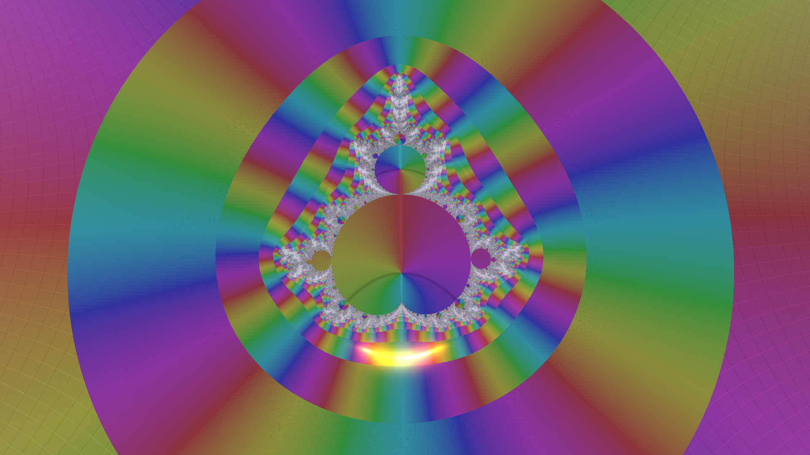

Controls
- Movement: `W`, `A`, `S`, `D` keys.
- Elevation: `Space` (Double-press to reset height).
- Sprint: Hold `Shift`.
- Slow Walk: Hold `Ctrl`.
- Menu: `Esc` to toggle settings.
- Critical Walking: `Ctrl + C` (when viewing the Zeta function) to walk along the critical line.
- Newton Walking: `Ctrl + Z` to walk to a zero in the context of the current function.
Functions
The explorer supports various standard complex functions, including trigonometric, exponential, and logarithmic functions. However, the centerpiece of the project is the Riemann zeta function \( \zeta(s) \).
The Riemann zeta function
Defined as \( \zeta(s) = \sum_{n=1}^\infty n^{-s} \) for \( \operatorname{Re}(s) > 1 \), it is analytically continued to the rest of the complex plane. Our implementation uses the Dirichlet eta representation for numerical stability when \( \operatorname{Re}(s) > 0.5 \):
For \( \operatorname{Re}(s) \le 0.5 \), the explorer utilizes the reflection formula to achieve analytical continuation to the entire complex plane:
In this calculation, the term \( \zeta(1-s) \) is evaluated using the Dirichlet Eta representation, since for \( \operatorname{Re}(s) \le 0.5 \), the reflected point \( 1-s \) has a real part greater than or equal to \( 0.5 \). This allows evaluation across the critical strip and beyond.
Note on Precision: Calculations are performed in GPU shaders using
float32 arithmetic.
This introduces numerical limitations and potential artifacts as the magnitude of the
imaginary
part \( |t| \) increases,
due to the rapid oscillation and large intermediate values of the functions involved.
These
effects are especially pronounced in the \( \sin \) and \( \Gamma \) terms
of the reflection formula, both of which can grow rapidly in magnitude.
Borwein's Algorithm
To efficiently and accurately compute the Riemann zeta function, we also utilize Borwein's algorithm. This method provides an accelerated approximation for the Zeta function, ensuring rapid convergence and numerical stability. We specifically use it in our zeros finder to refine the positions of potential zero candidates, achieving high precision in locating the non-trivial zeros on the critical line.
The Dirichlet beta function
The explorer implements the Dirichlet beta function \( \beta(s) \) using its series representation:
Similar to the eta function, this series converges for \( \operatorname{Re}(s) > 0 \).
The Gamma function
The Gamma function \( \Gamma(z) \) is implemented using the Lanczos approximation (\( g=7, N=9 \)):
where \( A_g(z) \) is the partial fraction expansion:
\[ A_g(z) = p_0 + \sum_{n=1}^8 \frac{p_n}{z+n} \]using the following coefficients:
- \( p_0 = 0.99999999999980993 \)
- \( p_1 = 676.5203681218851 \)
- \( p_2 = -1259.1392167224028 \)
- \( p_3 = 771.32342877765313 \)
- \( p_4 = -176.61502916214059 \)
- \( p_5 = 12.507343278686905 \)
- \( p_6 = -0.13857109526572012 \)
- \( p_7 = 9.9843695780195716 \times 10^{-6} \)
- \( p_8 = 1.5056327351493116 \times 10^{-7} \)
Numerical Singularities:
Regions where the function evaluation produces
NaN or infinite values are rendered as a dark terrain
covered with green grid-like squares reminiscent of The Matrix.
These regions typically arise near overflow conditions, or severe floating-point
instability in the GPU shaders.
Rather than hiding such failures, the visualization exposes them directly
as part of the numerical structure of the computation.

The Mandelbrot function
The explorer visualizes the Mandelbrot function by computing the sequence
\(
z_{n+1} = z_n^2 + c \) recursively,
starting at \( z_0 = 0 \), where \( c \) represents the position in the complex plane.
The iterations parameter controls the maximum depth of the recursion.
